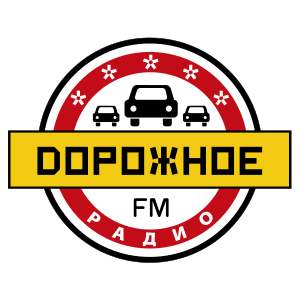

On air

Радио ШТАНЫ - Россия
Пенза
On air

Новое Радио - Россия
On air
Авторадио - Россия
On air

Дорожное радио - Россия
On air
Europa Plus - Россия
On air
Красноярск Главный - Красноярск
102.8 FM
On air
Радио ENERGY - Россия
On air
Радио Record - Россия
On air
Юмор FM - Россия